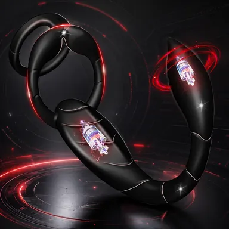

Steeds meer Nederlandse mannen ontdekken persoonlijke wellness als onderdeel van een gezonde routine: praktisch, privé en zonder ongemak.

Niet omdat mannen ineens
alles willen bespreken. Maar omdat
controle en vertrouwen overal meetellen.
Voor veel mannen is self-care inmiddels normaal: beter slapen, minder stress, gezonder eten en sporten. Maar zodra het over persoonlijk welzijn gaat, wordt het vaak weinig besproken. Terwijl juist daar veel vragen zitten: hoe leer je je lichaam beter kennen, hoe ondersteun je ontspanning van de bekkenbodem en hoe bouw je een rustige routine op zonder druk.
Waarom dit meer is dan een trend
Persoonlijke wellness gaat niet alleen over nieuwsgierigheid. In onderzoek naar persoonlijk welzijn, dagelijkse routine en lichaamsbewustzijn komt vaak dezelfde gedachte terug: wie zijn lichaam, reacties en grenzen beter begrijpt, voelt zich meestal rustiger en zekerder.
Voor veel mensen helpt dit ook om bewuster met grenzen, comfort en dagelijkse gewoontes om te gaan.
Persoonlijk welzijn hangt vaak samen met stress, vermoeidheid, houding en herstel. Daarom kan persoonlijke wellness voelen als onderdeel van een bewustere en rustigere relatie met jezelf.
Wat zegt onderzoek over persoonlijke wellness?
Bekkengebied en controle. In onderzoek naar bekkenbodemtraining wordt vaak gekeken naar spiercontrole, stabiliteit en lichaamsbewustzijn. Voor mannen kan dit relevant zijn omdat het bekkengebied een rol speelt bij houding, spanning, comfort en dagelijkse functie. Dit is algemene informatie over welzijn, geen medische behandeling.
Uitwendig gebruik en comfort. Hulpmiddelen voor uitwendig gebruik kunnen ondersteuning bieden bij bekkenbodemoefeningen thuis. Belangrijk zijn veilige materialen, eenvoudig onderhoud en een vorm die past bij rustig gebruik.
Ontspanning en lichaamsgevoel. Regelmatige beweging, ademhaling en bewuste ontspanning kunnen bijdragen aan minder spanning en meer controle in het bekkengebied. Dit is bedoeld als self-care, niet als medische behandeling of garantie op resultaat.

Meer rust. Meer vertrouwen.
Voor dagelijks comfort.
Keuzes voor mannen die rustiger, bewuster en met meer vertrouwen willen werken aan een dagelijkse wellnessroutine.

De Scorpion Wellness Trainer is ontworpen als hulpmiddel voor bekkenbodem-bewustzijn thuis. Het ondersteunt een geleidelijke opbouw van oefeningen en helpt bij het herkennen van spanning en ontspanning.
- Ondersteunt geleidelijke trainingsroutine
- Gemaakt van huidvriendelijk silicone
- Eenvoudig te reinigen ontwerp
- Geschikt voor thuisgebruik
Praktisch
en zorgvuldig
Onze belofte aan jou
We willen dat je rustig kunt kiezen. Daarom krijg je 30 dagen om te beoordelen of het hulpmiddel past bij jouw routine, comfort en verwachtingen.
FAQ
Neutraal verpakt, zonder opvallende informatie op de doos.
Ja. Er zijn keuzes voor een rustige start, zonder druk en zonder ingewikkelde beslissingen.
Kijk vooral naar je doel: een rustige start, meer comfort, maximale privacy, een eenvoudige routine of premium kwaliteit.
Begin zonder haast, lees de instructies, kies een comfortabel tempo en forceer niets.
Reinig het hulpmiddel na gebruik en bewaar het zorgvuldig volgens de instructies.
Kies niet voor “het beste product in het algemeen”, maar voor de keuze die past bij je belangrijkste doel.
Deze pagina biedt algemene informatie over persoonlijke wellness en bekkengezondheid. Het is geen medisch advies en vervangt geen consult met een arts of fysiotherapeut. Gebruik hulpmiddelen alleen volgens de handleiding.